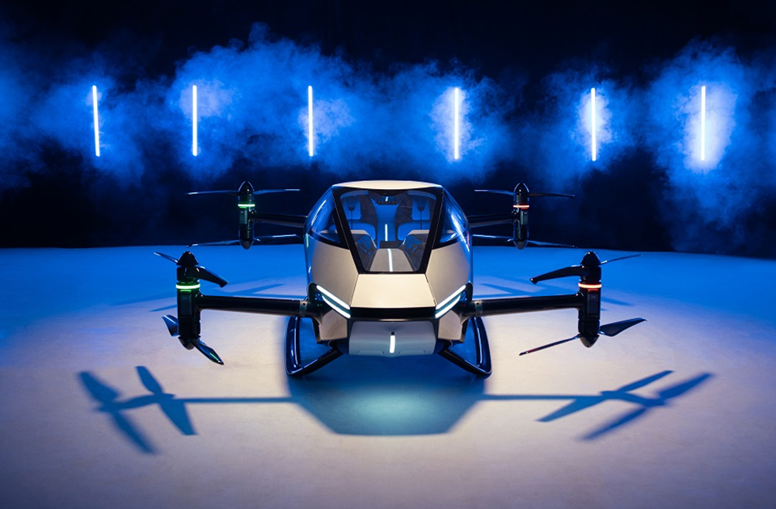
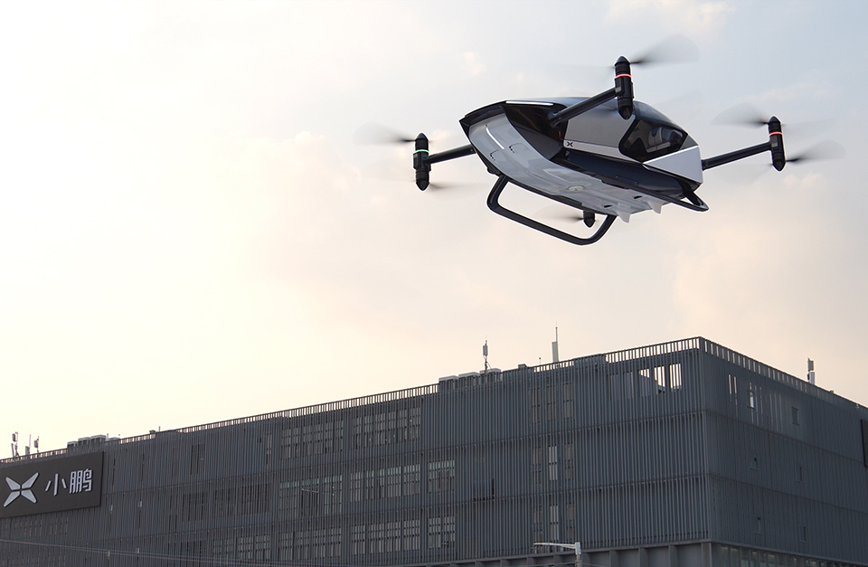
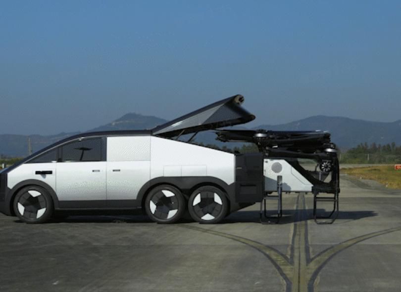
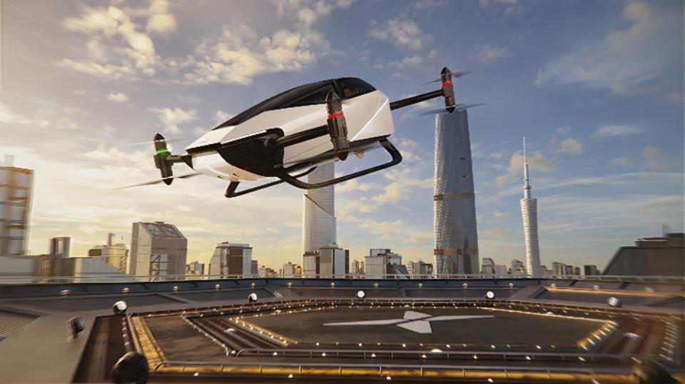

执行摘要 Executive Summary
旅航者 X2 是小鹏汇天（XPeng AeroHT，小鹏汽车生态企业）自主研发的第五代双人智能电动飞行器，属于纯电垂直起降（eVTOL）多旋翼平台。它在 2021 年立项、2022 年迪拜完成首飞、2023 年获得中国民航局飞行许可，是国内较早完成载人公开飞行演示的机型之一。
核心判断可概括为三点：
- 技术层面：八轴八桨多旋翼 + 全碳纤维机身 + 手动/自动双驾驶模式，工程演示已跑通；但 35 分钟级续航、1000 米以下高度和多旋翼气动效率，决定它只适合短途、低海拔、受控环境飞行。
- 场景层面：近期最现实的场景是文旅观光、空中展示、园区巡逻与应急演练；城市高频通勤、城际出行在当前续航、噪声、起降条件与法规下尚不成立。
- 市场层面：X2 本身是阶段性验证平台，并非最终量产交付车型；汇天真正面向销售的是分体式“陆地航母”飞行体。截至 2026 年，其型号合格证（TC）仍在最后审定阶段，订单为意向/预售性质，商业化闭环要等适航、起降网络与运营体系共同成熟。
研究设计与证据边界 Method and Evidence
调研围绕 X2 整车产品展开，并把汇天后续分体式产品“陆地航母”作为路线参照，以回答课程要求的三个核心问题：技术是否可行、场景是否适配、市场能否成立。
证据分级原则
| 证据类型 | 处理方式 |
|---|---|
| 企业官方披露（参数、构型、驾驶模式、产品规划） | 作为基础事实，但属于企业自证材料，需与第三方报道交叉核对 |
| 公开飞行演示与航展报道 | 可证明演示本身发生，不代表持续飞行包线或商业运营能力 |
| 适航与监管文件进展（TC 受理、TIA、符合性试验） | 作为合规状态的关键节点；未取证前，量产交付与载人收费运行均不成立 |
| 市场预测与订单数据 | 意向订单 ≠ 不可退款订单 ≠ 最终交付；收入估算仅作情景假设，不构成销量预测 |
需要说明：不同公开来源对 X2 空机重量（560 kg / 680 kg）、载重（160–200 kg）与续航（25–35 分钟）存在口径差异，本报告在参数表中标注区间，并以官方早期发布口径为主、后期现场报道为辅。
发展路径与产品定义 Development Path

关键时间线
| 时间 | 节点 | 意义 |
|---|---|---|
| 2020 年前后 | 汇天团队积累 15000 余次飞行数据，迭代 T1、X1 等机型 | 为封闭式载人座舱奠定飞控与旋翼基础 |
| 2021 年 6 月 | X2 完成首飞；9 月亮相珠海航展，公布未来城市场景构想 | 第五代双人飞行器公开亮相 |
| 2022 年 10 月 | 在阿联酋迪拜完成首次全球公开飞行，获迪拜民航局 DCAA 飞行许可 | 获得海外受控飞行许可，完成国际展示 |
| 2023 年 1 月 | 获得中国民航局（CAAC）飞行许可 | 在国内受控空域开展试飞与演示 |
| 2024 年 3 月 | 在广州城市核心区完成公开飞行；成都车展等多地演示 | 城市环境下的低空飞行验证 |
| 2023–2024 年 | 产品路线转向分体式“陆地航母”；2024 航展完成全球首次公开载人飞行 | X2 从“整车飞行汽车”叙事过渡到陆空分工路线 |
| 2025–2026 年 | 广州量产工厂建设；飞行体 TC 申请受理，TIA 签发，符合性试验推进；累计意向订单数千台 | 进入适航审定与量产准备阶段 |
产品定义：X2 是“阶段性探索产品”，不是上路汽车
X2 采用封闭式双人座舱，外观与小鹏 P7 共享设计基因，全机身碳纤维结构。需要强调的是：X2 本质是一台飞行器，不具备公共道路行驶能力——地面移动依赖可选装的滚轮式起落架，尺寸按可停入车位设计。它在汇天体系中的定位，是“飞机与汽车成功耦合之前的阶段性探索产品”。
真正承接“飞行汽车”叙事的，是后续分体式“陆地航母”：陆行体为可正常上路、可驶入地库的三轴六轮增程 SUV，飞行体可自动收纳进后备舱并由陆行体多次补能；到合规起降点后自动分离、垂直起飞，飞行后自动回收结合。这一方案把道路行驶与航空飞行拆成两个独立合规对象，规避了“同一套底盘同时过汽车与航空器双重认证”的难题。


系统架构与关键技术 Architecture and Technology
| 项目 | 参数 / 描述（公开口径） | 备注 |
|---|---|---|
| 构型 | 八轴八桨多旋翼，机臂可折叠，封闭式双人座舱 | 无固定翼、无涵道过渡，纯旋翼悬停与平飞 |
| 动力 | 8 台电池供电电动机分别驱动 8 副螺旋桨，纯电推进，飞行中无二氧化碳排放 | 分布式电推进，提供一定动力冗余 |
| 结构材料 | 全机身碳纤维，兼顾轻量化与高强度 | 公开口径空机含电池约 560 kg（另有 680 kg 现场报道） |
| 载重 | 最大载重约 160–200 kg，搭载两名成年人及少量行李 | 载重与续航对乘客体重、风况敏感 |
| 续航时间 | 约 25–35 分钟（不同工况口径） | 对应航程为城市内短途，非城际距离 |
| 驾驶模式 | 手动驾驶 + 自动驾驶双模式；一键起飞、一键返航、一键降落；自主航线规划、环境感知与降落辅助 | 自动飞行降低了操作门槛，但载人运行仍需合规资质 |
| 几何尺寸 | 展开状态约长 5.17 m、宽 5.12 m、高 1.36 m，桨叶直径约 1.83 m | 折叠后便于收纳与运输 |
关键技术模块
- 分布式电推进（DEP）：多电机多桨独立驱动，单台动力失效时其余单元可承担一定补偿，是多旋翼载人平台冗余设计的基础。
- 飞控与空中智驾：汇天团队构建全栈自研低空 3D 智能驾驶能力，覆盖航线规划、多维环境融合感知、自主返航与降落视野辅助；自研单杆操纵系统以降低操作复杂度。
- 轻量化机身：碳纤维主体结构与桨叶，在承重与减重之间权衡，直接影响载重与续航。
- 补能思路：X2 沿用电动汽车超充技术路线；分体式方案中陆行体作为移动超充站，满油满电可对飞行体多次补能，缓解飞行器自身电池容量受限的问题。

技术可行性与物理边界 Physics of Limited Flight
多旋翼 eVTOL 的技术可行性必须放在物理约束下评估，而不能只看“已经飞起来”。X2 所代表的纯多旋翼路线有明确的能力天花板。
可行的部分
- 垂直起降无需跑道，适配楼顶、场地、景区等小面积起降点；
- 纯电推进结构相对简单、噪声与排放低于燃油直升机，适合城市低空与文旅场景；
- 分布式动力 + 自动飞控，使短时、受控条件下的载人演示具备工程基础；
- 碳纤维机身与折叠机臂，解决了一部分收纳与运输问题。
受限的部分
| 约束域 | 物理/工程原因 | 对能力的限制 |
|---|---|---|
| 续航与航程 | 锂电池能量密度远低于航空燃油；多旋翼悬停功率消耗大，载客后可用能量进一步被压缩 | 仅 25–35 分钟级留空时间，无法承担城际通勤或长距离任务 |
| 气动效率 | 纯多旋翼无固定翼巡航升力，平飞仍需旋翼克服阻力，效率低于复合翼/倾转旋翼 | 速度 130 km/h 级、高度 1000 m 以下，飞行包线较窄 |
| 载重敏感性 | 两名乘客 + 行李接近载重上限，体重、海拔、气温、风况都会改变起飞重量与裕度 | 运营场景受载荷与气象条件严格限制 |
| 抗风与环境 | 多旋翼惯量较小，城市楼宇间阵风、下洗气流与地面效应影响姿态稳定 | 需划定可飞气象窗口与净空条件 |
| 地面移动 | X2 道路行驶能力极弱，本质是飞行器而非汽车 | 不能作为“开到哪飞到哪”的两栖个人载具 |
安全、冗余与适航进展 Safety, Redundancy and Airworthiness
载人飞行器的安全论证不能停留在“飞控能自动返航”。航空安全要求覆盖单点/多点失效后的姿态可控、关键系统冗余、应急着陆与地面人员隔离；适航则是从概念阶段就影响架构、供应商、软件保证与运行程序的过程，不是开发末端追加的测试步骤。
汇天公开的安全设计
- 动力、飞控、供电、通信、操控等关键系统采用全域冗余备份，第一套系统失效后第二套无缝衔接；
- 自动模式下具备多维环境融合感知、降落视野辅助、自主返航降落；
- 分体式飞行体采用六旋翼双涵道构型，机臂与桨叶可折叠，主体结构与桨叶为碳纤维材料。
适航审定状态（截至 2026 年 11 月）
| 合规环节 | 状态 | 含义 |
|---|---|---|
| TC 型号合格证申请受理 | 2024 年初由民航局受理 | 进入法定型号审定流程，是从“试验飞行器”走向“合法航空器”的第一步 |
| 符合性验证试验及试飞 | 69 项已全部通过，型号检查核准书（TIA）已签发 | 审定进入最后阶段，但 TC 证书尚未正式下发 |
| PC 生产许可证 / AC 适航证 / OC 运营合格证 | 尚未在公开资料中见齐套 | 对照已取证的无人驾驶 eVTOL，载人机型的生产与商业运营资质仍需补齐 |
监管与社会环境
2026 年 7 月 1 日起施行的新修订《民用航空法》首次将“低空经济”写入法律文本，明确 300 米以下低空空域分类分级管理，部分空域审批由“一事一批”转向备案制；民航局也先后发布动力提升航空器、限用类无人驾驶航空器适航标准及成体系的 eVTOL 专用审定指南。制度环境在改善，但起降设施、通信导航监视网络、保险体系与公众噪声/坠落风险接受度仍是并行瓶颈。
应用场景分析 Application Scenarios
技术可行、运营可行与市场可行是三件事。下表按“技术适配—监管难度—支付意愿”对典型场景逐项判断，避免用单一愿景覆盖所有用途。
| 场景 | 技术适配 | 监管难度 | 支付意愿 | 综合判断 |
|---|---|---|---|---|
| 文旅景区 / 地标观光 | 高 | 中 | 较高 | 近期最现实，限定航线、固定起降点、受控客流 |
| 品牌展示 / 航演活动 | 高 | 中 | 高 | 封闭场地演示，商业逻辑接近高端体验与品牌传播 |
| 园区 / 警用巡逻、空中巡查 | 中 | 中 | 中 | 可作试点，但多数巡查任务无人机性价比更高 |
| 应急救援 / 医疗运输 | 低 | 高 | 高 | 当前载重、续航与全天候能力不足，不适配主力救援 |
| 城市内通勤 / 打飞的 | 低 | 极高 | 中 | 受续航、噪声、起降点、空域与公众接受度约束，现阶段不可行 |
| 城际出行 | 低 | 高 | 中 | 需复合翼/倾转旋翼长航程机型，非 X2 纯多旋翼路线 |

市场可行性 Market Feasibility
需求侧：高关注度不等于大众市场
公开报道中，分体式“陆地航母”在航展与 CES 等场合获得大量意向订单，海外亦有中东批量采购协议传闻；但意向订单、订金与不可退款订单、最终交付之间存在本质区别。更稳妥的可服务市场模型是：可服务对象 = 高净值/文旅运营客户 × 对低空飞行体验有支付意愿的比例 × 可获得监管运行条件的比例，而不是把低空经济宏观规模直接乘上一个份额。
产品价格与生命周期成本（情景假设，非官方定价）
| 情境 | 教学假设单价 | 年度可交付量 | 订单转化率 | 年收入量级（未扣成本） | 成立条件 |
|---|---|---|---|---|---|
| 保守 | 约 150–200 万元人民币 | 百台级 | 较低 | 数亿元人民币 | 仅限封闭场地与少量文旅/展示运行 |
| 基准 | 约 200 万元以内 | 数百台 | 中等 | 十亿元级 | 多地区有限许可、起降与维护网络成型 |
| 积极 | 更高配置/定制 | 上千台 | 较高 | 更大规模 | 适航闭环、监管路径明确、海外市场落地 |
注：上表为教学敏感性假设，参考公开报道中“陆地航母售价锁定在 200 万元以内”的说法，交付量与转化率均为情景变量；收入仅按单价 × 可交付量估算，未扣除退货、税费、渠道、保修、保险与事故成本。
供给侧：补能、维护与运营网络是硬门槛
- 起降与补能：需要合规起降点、充电/补能设施、通信导航监视覆盖；分体方案由陆行体补能是缓解思路，但网络仍需逐城建设。
- 维护与资质：旋翼、电机、电池、飞控的定期检测与人员培训要求高于普通无人机；运营方需满足通航运营资质、保险与应急处置要求。
- 替代品竞争：高端体验可被直升机体验、固定翼通航、无人机灯光秀与超跑等替代；载人 eVTOL 必须证明更低综合成本或更高体验价值。
公共接受度
公众对城市低空出行的态度受安全感知、噪声、隐私、坠落风险与程序公平共同影响。限定场地运行的接受门槛较低；一旦进入城市公共上空，社区许可与适航许可同等重要。电池能量密度、航空级材料与核心系统的自主可控程度，也决定长期成本与供应安全。
竞品横向比较 Comparison
| 产品 / 企业 | 类别与路线 | 验证路径 | 主要优势 | 主要约束 |
|---|---|---|---|---|
| 小鹏汇天 X2 / 陆地航母 | 纯多旋翼验证平台 + 分体式陆空方案；载人 eVTOL | 国内多地试飞演示；飞行体 TC 受理、TIA 签发，审定最后阶段 | 汽车工程体系与供应链支撑；陆行体补能与收纳思路清晰；品牌与订单关注度高 | TC/PC/OC 尚未齐套；X2 续航航程有限；起降与运营网络待建 |
| 亿航 EH216-S | 无人驾驶双座多旋翼 eVTOL | 已获 CAAC 型号合格证、生产许可证、标准适航证及运营合格证，投入商业运营 | 全球少数适航三证/运营资质齐套；观光场景落地架次多 | 无人驾驶、航程约 30 km，定位短途观光；载人客运规模仍有限 |
| Joby S4 | 载人倾转/复合翼 eVTOL，1 飞行员 + 4 乘客 | 沿 FAA 型号审定流程推进，临近 TC；多地演示飞行 | 航空设计、低噪声、城市航线与城际接驳目标；资本与伙伴实力强 | 适航周期长、基础设施与成本压力大，尚未规模卖票 |
| Archer Midnight / 沃飞 AE200 等 | 载人多座 eVTOL，城市空中出租车定位 | 型号审定、量产与运营合作推进中 | 面向城市航线，规模化制造与航线合作布局 | 系统复杂、公共接受度与 vertiport 起降场依赖度高 |
横向比较的关键不是谁飞得更高，而是各产品能否闭环自己的验证路径：有人驾驶与无人驾驶、纯多旋翼与复合/倾转旋翼、飞行器与分体陆空方案，对应不同的资本强度、监管风险与收入节奏。竞品定位来自企业公开页面与媒体报道，应与监管文件和第三方证据交叉使用。
工程化路线与 Go/No-Go 判据 Roadmap and Criteria
一个可信的工程化路线应从定义可验证的飞行包线和安全目标开始，而不是从扩大宣传开始。建议把下一阶段证据拆成四个门槛：

路线图随后应依次建立：安全案例骨架（任务与环境、系统边界、危险清单、风险接受原则、关键安全需求与独立验证方法）→ 运行体系（场地审批、人员训练、气象窗口、观众隔离、应急消防、残骸处置与事故报告）→ 分场景扩张（从单场地、低频次、受控观众起步，再逐步增加频次与地点，每进入新地点重新评估噪声、净空、地面交通与社区沟通）。
若上述门槛无法公开至少部分证据，最合理的结论不是“项目失败”，而是“它仍处于概念验证、品牌验证与审定推进阶段”。对课程研究而言，保留不确定性比用愿景填补空白更专业。
结论与课程延伸 Conclusion
总体判断：小鹏汇天 X2 作为国产第五代双人纯电 eVTOL 验证平台，已经完成从航模/原型到载人公开飞行的跨越，分布式电推进、碳纤维机身与自动飞控构成了可行的技术基础；但其纯多旋翼构型在续航、航程、载重与环境适应性上有明确物理边界。
从产品战略看，汇天没有死守“一台车既能上路又能飞”的高难度方案，而是转向分体式“陆地航母”，用陆行体解决道路移动、收纳与补能，用飞行体承担受控低空飞行，这是一条更务实的工程路径。短期价值集中在文旅、展示与限定场景；中期取决于适航取证、起降网络与运营体系；城市大众通勤仍是长期目标，而非当前可交付产品。
可进一步延伸讨论的问题
- 纯多旋翼与复合翼、倾转旋翼在航程、效率、噪声与适航难度上的权衡；
- 有人驾驶与无人驾驶两条路线在安全责任、资质与场景上的差异；
- 低空通信导航监视、起降设施与保险体系如何与整机研发同步推进；
- 电池能量密度进步对 eVTOL 航程与载重边界的改变速率。
参考文献 References
- 小鹏汽车官方：《小鹏汇天飞行汽车首次亮相欧洲 计划 2022 年上半年欧洲试飞》（X2 官方参数与定位），xiaopeng.com/news/company_news/4081.html
- 小鹏汽车官方：《小鹏汇天首次分享飞行汽车未来城市应用场景 旅航者 X2 将于 9 月 28 日亮相珠海航展》，xiaopeng.com/news/company_news/4043.html
- 飞行汽车网：《小鹏汇天飞行汽车成都首飞 联合川航通航推动西部低空经济发展》（2024-08-30，现场重量/载重/续航口径），feiauto.com/tt/782.html
- 小鹏汽车官方：《小鹏汇天“陆地航母”飞行汽车海外首秀，计划 2026 年量产交付》（CES 展示、分体构型与订单），xiaopeng.com/news/company_news/5438.html
- 新浪财经：《小鹏飞行汽车十三年：从草根试飞到量产取证前夜》（2026-11-26，TC/TIA/订单/工厂与 A868 进展梳理），cj.sina.com.cn
- 亿航智能官网：公司与 EH216-S 适航三证及运营资质说明，ehang.com/cn/about
- 新华网：《低空经济动态观察》（2026-11-03，民航法修订、空域分类分级与适航标准进展），xinhuanet.com
- 中国民用航空局：《宋志勇：推动低空经济健康有序发展》（监管、基础设施与适航短板），caac.gov.cn
- 新华网：《直面发展关卡 产业蓄能向上 eVTOL 竞速低空经济商业蓝海》（2026-10-20，产品路线、规则/生态/市场三道关口），xinhuanet.com
- 课程参考范例：The Flying Tesla Roadster — 技术、场景与市场可行性，lab.autozyx.com
说明：企业官网与媒体报道属于自证/转述材料，适航状态以民航局正式文件为准；本报告参数与订单数据截至 2026 年 11 月，后续进展可能更新。